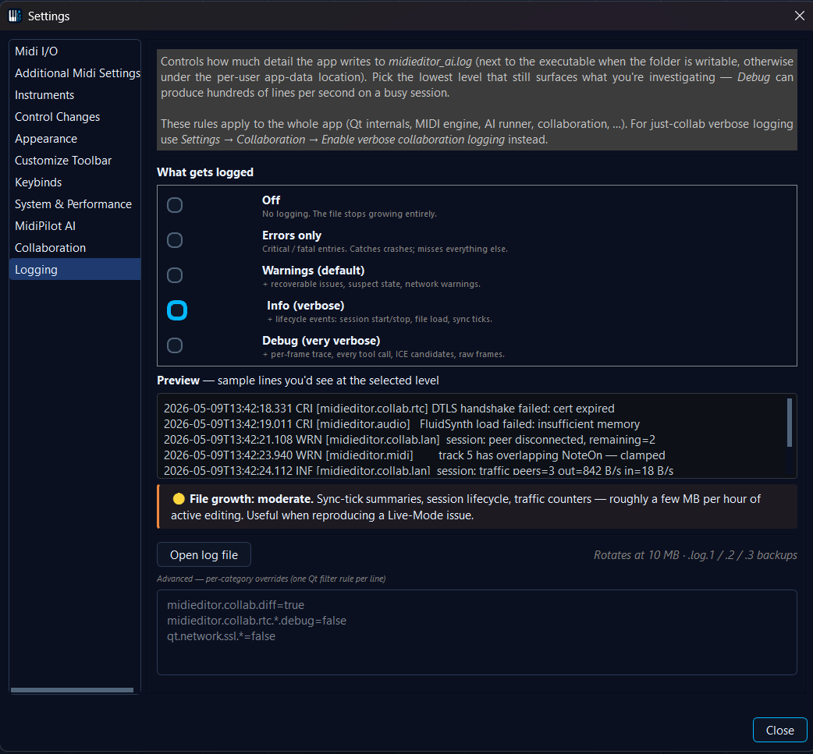

📝 Logging
MidiEditor AI writes a runtime log so you can attach it to a bug
report, post-mortem a session that didn't behave, or just see what
the app is doing internally. The log is one plain text file
(midieditor_ai.log) with sane defaults: most users never
have to think about it.

This page covers what the log records, where to find it, how to turn it up while debugging, and how to keep it from filling your disk if you forget to turn it back down.
The four severities
Each line in the log is tagged with one of the four severities above,
plus a category (e.g. midieditor.collab.lan) and a
timestamp. The level you choose in
Settings → Logging tells the app which severities to
write to the file - the rest are silently dropped.
The five levels
Levels are cumulative: each higher level includes the lower ones. Info writes everything Warnings writes plus the info lines. The colored bar next to each radio in the settings dialog mirrors this on screen.
What each level looks like
Errors only - only crash-class entries, nothing routine:
Warnings (default) - adds recoverable issues:
Info - adds lifecycle events that show what the app is doing:
Debug - adds per-frame / per-iteration trace lines:
File size & performance trade-offs
Each level produces a different rate of writes per second. The list below is what to expect from a typical 30-minute session; your mileage varies with how busy your file is.
Where the file lives, and how rotation works
MidiEditor writes midieditor_ai.log next to the
MidiEditorAI.exe - same folder as the binary, easy
to grab and attach to an issue. The Open log file button in
Settings → Logging opens it directly.
Rotation is in-flight, not just at startup: as soon as the active
log hits 10 MB, the file is renamed and a fresh one starts.
Up to three numbered backups are kept - .log.1,
.log.2, .log.3 - oldest first to
go. So total disk usage caps at four files × 10 MB =
40 MB regardless of how long the app runs.
Per-category overrides (advanced)
Underneath the level radios is a small text area for Qt's standard filter-rule syntax. One rule per line, applied after the level above (so per-category rules win). Example use cases:
You'll rarely need this. The two common situations:
- You only care about collab logs at debug detail. Use Settings → Collaboration → Enable verbose collaboration logging instead - it sets the right rule for you and stays out of this page.
- You want to silence one chatty subsystem while
investigating something else (e.g.
qt.network.ssl.*=falsewhen SSL is fine but something else is broken).
When to attach the log to an issue
- Open Settings → Logging, raise the level to Info (or Debug for a really specific bug), close.
- Reproduce the issue.
- Hit Open log file; the file opens in your default text editor / file viewer.
- Attach (or paste) the relevant section to the GitHub issue. The bigger the file, the more context, but also the bigger the upload - trim around the timestamps that match what you reproduced.
- Switch the level back to Warnings so the file doesn't keep growing.
Logs never leave your machine on their own - the app doesn't phone home. Only sharing them via a GitHub issue (or a paste-bin link) sends them anywhere.